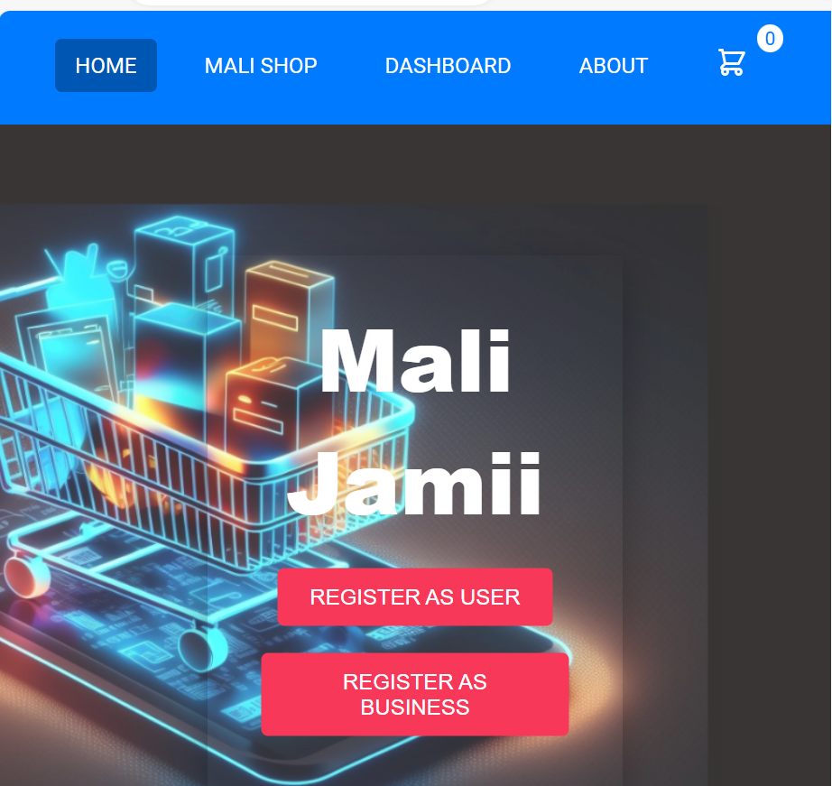
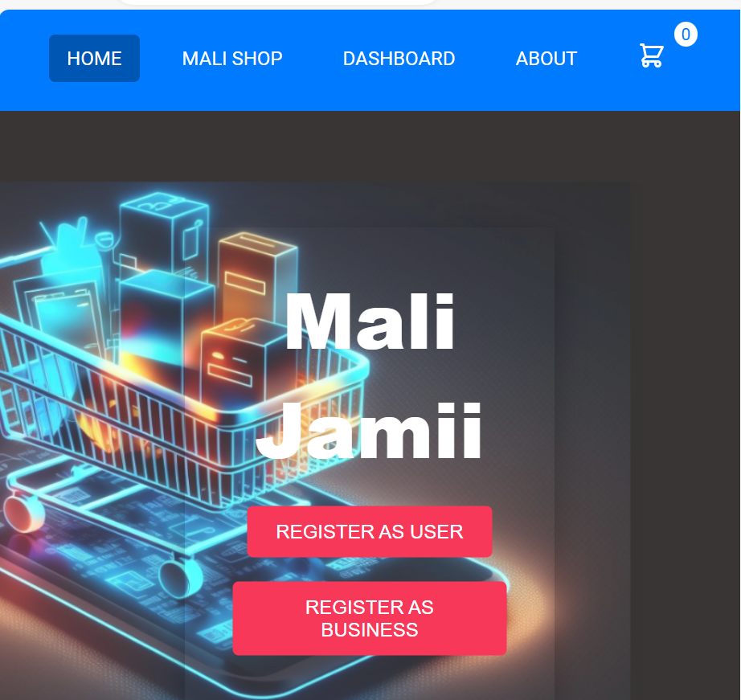

In this project, I built a React Native mobile application that allows
small business users to record and track their inventory, input their sales data
and view realtime updated sales analytics.
It helps keep track of inventory levels and sales and is easily accessible for the smallest of businesses.
.png) 

Marketplace website for small businesses to list their products.Built on React Js with a Php MySql database. Due to the rise of
Social Media use especially Tiktok, I got to learn of the different shops to find particular products
i.e. home appliances, decor, which I would have otherwise not known they existed.
This website was created to make it easier for shops in different categories to be available for consumers to explore
their products and compare with others before opting to purchase
.png)
Originated by the rise in gig economy. This is an ongoing project based on building a React Native
Mobile Application that allows users to pay gig runners to run their errands be it shopping,
delivering products, procuring documents and track gig completion status on the app. It makes it easier to delegate day-to-day activities
while creating an extra source of income for gig runners in the city.